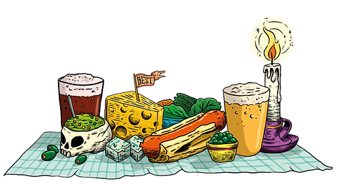
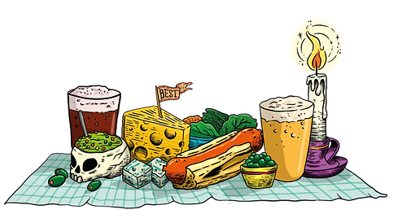

LAS GRINGAS


 

LAS GRINGAS
LAS GRINGAS abrió sus puertas en el 2017 con la misión de
elaborar pizzas inspiradas en insumos peruanos. Horneamos
nuestras pizzas en horno artesanal de leña, utilizando en las
masas harina de quinua, cañihuaco, linaza y maíz.
Hacemos pizzas que te hacen SENTIR BIEN ya que además de
super foods andinos utilizamos vegetales frescos, germinados,
fruta, productos locales y de temporada.
Ofrecemos también pizzas y pastas Sin Gluten, veganas, ensaladas
y una amplia selección de cervezas artesanales peruanas e
importadas así como Gins artesanales locales.

NUESTRAS
PIZZAS
Nuestras pizzas son un homenaje a
la creatividad gastronómica peruana,
ya que combinamos ingredientes tradicionales
con un toque innovador.
Cada bocado de nuestras pizzas es una explosión
de sabores que fusiona la riqueza de la comida
peruana con la autenticidad de la tradición pizzera.
Te garantizamos una experiencia culinaria inolvidable
que te hará apreciar aún más la dinámica
y versátil gastronomía peruana.
 TAKEAWAY →
RAPPI →
TAKEAWAY →
RAPPI →

UBICACIÓN
Y HORARIO
CALLE SANTA CATALINA 204
CERCADO - AREQUIPA
LUNES A DOMINGO
BRUNCH: 11AM - 3PM
PIZZAS: 5PM - 11PM